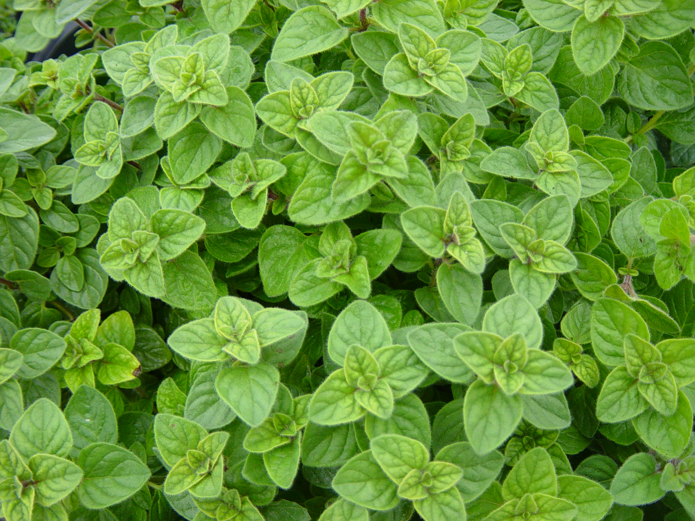

Basil is a culinary herb of the family Lamiaceae. Basil is native to tropical regions from central Africa to Southeast Asia. It is a tender plant, and is used in cuisines worldwide. Depending on the species and cultivar, the leaves may taste somewhat like anise, with a strong, pungent, often sweet smell.
{kind=link}
Scientifically known as Salvia officinalis, sage is closely related to rosemary. In fact, many of the health benefits from sage are derived from the rosmarinic acid, the organic compound found in rosemary that makes it powerful. Despite many similarities, sage is distinct in that it is actually an evergreen shrub with woody stems and blue-purple flowers found in the Mediterranean region.
{kind=link}
Parsley is a species of flowering plant in the family Apiaceae that is native to the central Mediterranean region, but has naturalized elsewhere in Europe, and is widely cultivated as an herb, a spice, and a vegetable.
{kind=link}
Organum, or Oregano comes from the mint family Liliaceae. Oregano is originally from the warmer climates, such as the Mediterranean region. Oregano originated and originally first used by the Greeks. The Goddess Aphrodite was believed to have created this herb. It was to be a symbol of joy growing in her garden. The word oregano derives from the Greek phrase Eros, meaning mountain, and ganos, meaning joy. Hence, joy of the mountains.

{kind=link}
Mint is a fast-growing, aromatic herb plant in the Mentha genus. There are literally hundreds of mint plant varieties and far too many to name here. However, a number of these mint types are commonly grown in the garden
{kind=link}
Salvia elegans, commonly called pineapple sage or tangerine sage, is a perennial shrub native to Mexico and Guatemala. It inhabits Madrean and Mesoamerican pine-oak forests between 6,000 and 9,000 ft.
{kind=link}